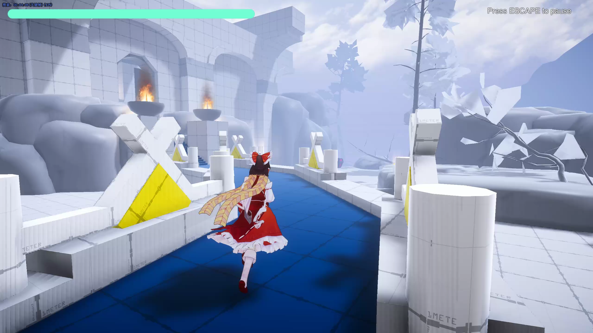
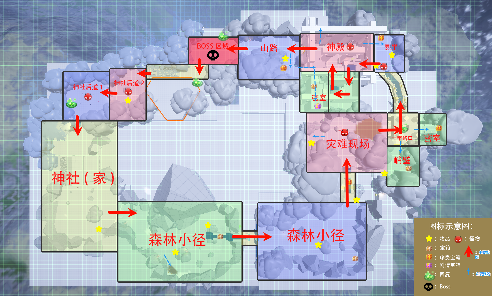
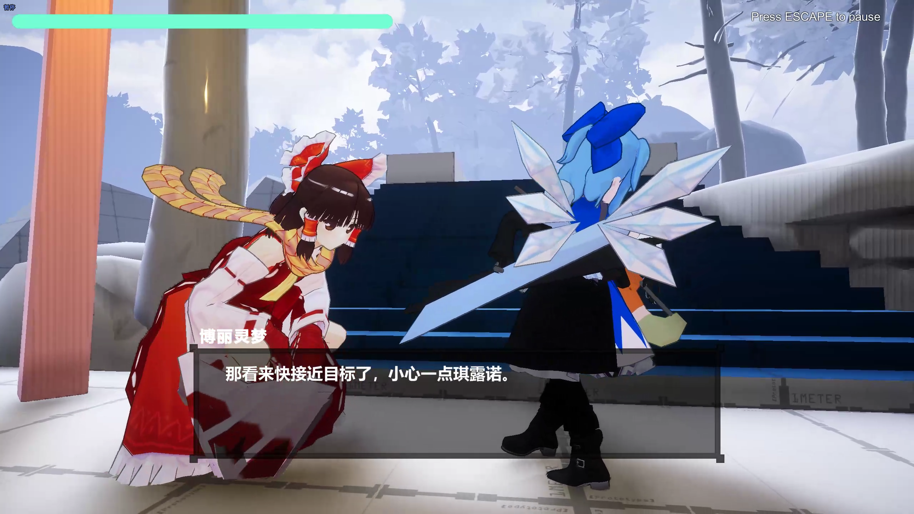
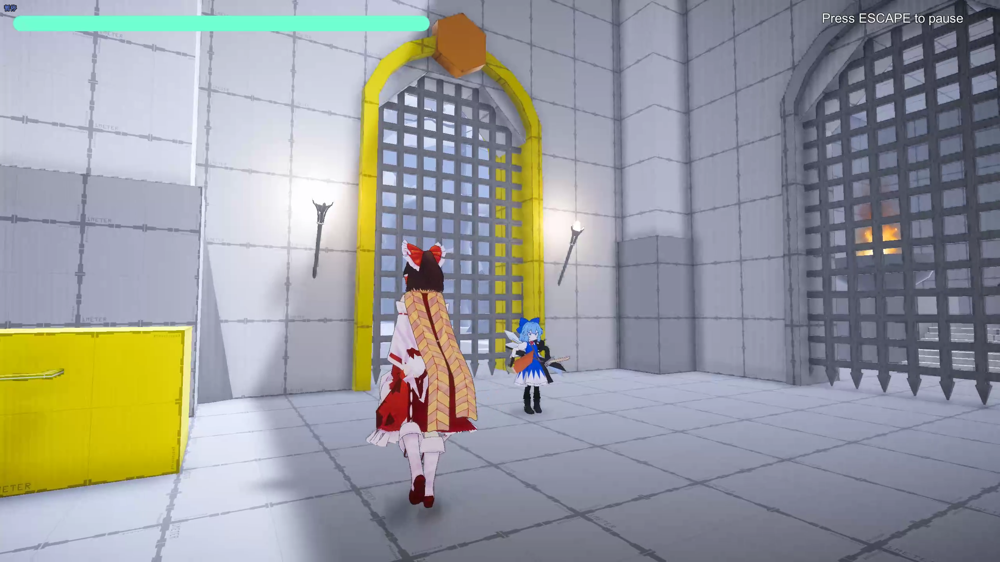

返回项目档案
Project 03 / Level Design Document
东方雪冥录
幻想乡迎来又一个寒冷的冬天，博丽神社附近却接连发生参拜村民在风雪中伤亡的异样事件。 博丽灵梦与自称“最强”的冰冻妖精琪露诺结伴踏入雪原，在战斗、探索与解谜中逼近这场冬日异变背后的真正元凶。
Level Whitebox / New Player Guidance
01 / Project Reel
关卡实机演示
从叙事引入、能力教学、战斗验证到 Boss 高潮，完整检查空间动线、信息引导与战斗节奏。
东方雪冥录
关卡策划案
以战斗、叙事、探索为共同支柱，记录新手关卡从场景动线、角色能力、核心玩法到战斗节奏的完整设计思路。
下载 DOCX 原稿关卡叙事背景
风雪异变中的同行与调查
幻想乡迎来又一个寒冷的冬天，博丽神社附近接连发生前来参拜的村民在风雪中伤亡的异样事件。 博丽灵梦决定动身调查，并意外与自称“最强”的冰冻妖精琪露诺结伴同行。
二人踏进茫茫雪原，在纷飞的大雪中一路战斗、探索、解谜。灵梦以符卡展开华丽弹幕， 琪露诺则操控寒冰之力，彼此配合，步步逼近这场冬日异变背后的真正元凶。
叙事以伙伴对话、目标移动和环境布景共同推进。关卡不只是战斗容器， 还需要通过持续出现的叙事锚点，让玩家理解为什么前进、下一处目标在哪里，以及当前区域承担什么体验职责。

关卡概述
一、关卡概述与设计定位
本关以前期新手引导为定位，在教学中验证基础操作与核心玩法， 同时建立战斗、叙事、探索共同组成关卡体验的设计基准。
制作范围与关卡职责
关卡白盒使用 Unity、ProBuilder 与 PolyBrush 搭建，场景尺寸为 220m × 150m， 预计游玩流程约 10 分钟。新手引导职责不只是逐项说明操作，还要让玩家在真实空间与战斗情境中反复调用能力。
- 战斗：建立近战、远程与弹幕符卡的基础操作认知，并通过敌人与可破坏障碍完成验证。
- 叙事：通过伙伴对话、镜头控制与场景信息交代调查目标，持续推动玩家前进。
- 探索：利用支线路径、拾取物、宝箱与视线关系建立空间探索动机和心理地图。
关卡平面设计图
二、先规划完整路线，再进入引擎搭建白盒
平面图将神社、森林、战斗区、解谜节点与 Boss 区域组织成一条可回望的 3D 线性路径。
路线控制玩家前进方向，也安排每一次能力教学、战斗验证与节奏放缓。 关卡在主要动线之外保留支线空间，让探索、奖励和叙事信息为直行路线提供呼吸与变化。

Demo 与参考
三、用可游玩结果验证关卡结构
Demo 记录关卡从叙事引入、能力教学、战斗验证到 Boss 高潮的完整结构， 用于检查空间动线、信息引导与战斗节奏是否按设计意图传达。
页面开头的实机视频即本关当前白盒成果。关卡设计参考《战神 4》的野林新手教程关卡， 重点借鉴其将操作教学、亲子叙事与空间探索融合在同一段连续体验中的组织方式。
Reference & Demo
战神 4 · 野林 / 东方雪冥录关卡白盒
打开演示视频
可在 B 站查看原演示视频，对照关卡区域推进与战斗验证过程。
关卡流程结构
四、用八段区域完成教学、验证与节奏推进
关卡采用 3D 线性叙事探索结构，每一段区域分别承担叙事、能力教学、战斗验证、 探索放缓或高潮收束等职责。
- 01 / START 神社（出发点）
- 02 / TUTORIAL 森林小径
- 03 / ENCOUNTER 灾难现场（遭遇战）
- 04 / EXPLORE 十字路口
- 05 / ENCOUNTER 神殿（遭遇战）
- 06 / CLIMAX Boss 区域（Boss 战）
- 07 / VERIFY 神社后道
- 08 / END 神社（终点）
| 区域名称 | 核心功能 | 设计重点 |
|---|---|---|
| 神社 （出发点） |
交代关卡叙事背景 基础操作教学 |
以环境交代、布景营造紧张氛围，通过系统镜头控制进行关卡叙事。 以琪露诺的剧情对话作为引导，控制整体关卡的动线。 |
| 森林小径 |
验证“互动”基础操作 鼓励玩家探索支线区域，奠定关卡后续设计的体验基调 教学新能力“跳跃”“翻越”操作 引入关卡叙事，提供关卡目标 |
布置灯光、颜色差异进行视觉引导，设置一定数量拾取物作为关卡 POI，控制玩家动线。 在非主要动线的隐藏区域布置宝箱和剧情互动区域。道路狭窄， 设置障碍物并搭配视线遮蔽，调整探索节奏；引入“未知飞行物”， 通过镜头控制进行叙事与目标提示。 |
| 灾难现场 （遭遇战） |
教学新能力“弹幕符卡射击”操作，破坏关卡障碍 基础近战 / 远程战斗教学 |
（1）小规模敌人战斗，引入战斗系统。 （2）通过火场、尸体、流血等交代环境叙事，营造紧张氛围。 |
| 十字路口 | 拓宽支线路线，鼓励玩家探索，构建心理地图，延缓游戏节奏 | 设计与玩法机制强相关的解谜房间，让玩家验证获得的新能力“弹幕符卡射击”。 |
| 神殿 （遭遇战） |
进行关卡叙事，重新强化关卡目标 验证玩法机制与战斗能力 教学“符卡”机制在关卡机关解谜中的应用 |
中规模敌人战斗，验证战斗系统。 设计与符卡能力相关的关卡机关，巩固玩家获得的能力。 |
| Boss 区域 （Boss 战） |
验证之前关卡的所有操作玩法 解锁重要新能力“破魔点” |
让玩家在验证此前学习成果的过程中获得成就感。 |
| 神社后道 | 验证玩家获取的新能力“破魔点” | 布置小 / 中规模敌人战斗，敌人类型与“破魔点”机制强相关， 满足玩家迫切使用新能力的想法。 |
| 神社 （终点） |
交代关卡目标完成 引入新剧情和新关卡目标 |
交代叙事背景，连接前后关卡。 |
角色 3C
五、以第三人称控制承接探索、战斗与叙事
博丽灵梦具备基础行动能力和战斗能力，既能近距离作战，也能使用弹幕符卡远程攻击敌人。
弹幕符卡同时具有封印特色，成为本关玩法主题，并围绕“战斗—叙事—探索”展开。 第三人称视角与半强制镜头共同承担角色控制：剧情叙事阶段使用强制镜头， 战斗与探索阶段保留自由操作。
通过移动、跳跃与攀爬支持森林探索、支线路线和空间高低差。
近距离攻击与远程符卡共同组成战斗手段，并提供封印能力。
剧情叙事使用强制镜头，战斗与探索阶段保留第三人称自由操作。

弹幕符卡
六、用弹幕符卡连接战斗、解谜与破魔点
弹幕符卡不只承担远程攻击，也同时作用于关卡障碍、机关与带破魔点的敌人。
同一个核心机制被放进不同场景职责中，让玩家持续复习操作，并逐步建立战斗决策。 从直接攻击敌人，到破坏或封印场景机关，再到针对黄色高亮部位制造硬直， 玩法复杂度沿关卡流程逐步提升。
| 作用对象 | 核心用途 | 示例 |
|---|---|---|
| 敌人 | 作为远程战斗的常规手段。 | （1）远程发射符卡弹幕攻击敌人。 |
| 关卡障碍 / 机关 | 弹幕符卡具有破除或封印功能，能破坏场景障碍，或封印运行的关卡机关， 用于探索、解谜并推进关卡流程。 |
（1）发射弹幕摧毁可破坏的木板障碍。 （2）破坏对应额定数量的封印球获取宝箱奖励；封印正在运作的关卡机关。 |
| 含破魔点部位 | 作为关卡重要转折点获取的新能力，可对含破魔点的敌人发动封印攻击， 造成较大伤害和硬直，增加战斗决策并调整战斗节奏。 | 攻击带有黄色高亮标记的部位（破魔点），产生封印效果， 使目标进入较长时间的硬直。 |

战斗节奏
七、用战斗密度和能力获取控制关卡情绪
节奏从叙事引导开始，经过战斗学习、探索放缓、中规模验证与 Boss 高潮， 最后用神社后道让玩家立即使用新能力，完成整段关卡的收束。
-
01 / SETUP
叙事引导
神社 -
02 / START
节奏启动
森林小径 -
03 / LEARN
战斗学习与验证
灾难现场 -
04 / REPEAT
放缓节奏、重复验证
十字路口 -
05 / VERIFY
中规模战斗与验证
神殿 -
06 / BREATHE
放缓节奏
山路、密室 -
07 / CLIMAX
节奏高潮与新能力
Boss 区域 -
08 / APPLY
小 / 中规模战斗与能力验证
神社后道 -
09 / END
关卡结束
神社
玩家引导
八、把动线提示融进角色、镜头和环境
主要路线依靠角色叙事和镜头中的目标移动方向来建立，环境表现则负责支线价值、 情绪氛围和心理地图。
不同区域使用不同的视觉引导密度，避免所有信息都以同一种方式出现。 主轴推进、支线探索与场景叙事彼此配合，让玩家既能看懂下一步方向，也愿意主动偏离主路。
以琪露诺引导玩家探索，作为主要动线引导和关卡驱动力。
在叙事节点的镜头控制下，通过黑衣人（关卡目标）的移动方向提供玩家行进方向。
- 森林小径 / 神社后道 灯光与颜色作为大雪环境的视觉引导，地面颜色差异作为支线 POI。
- 灾难现场 / 神殿 布置焚烧、尸体、血迹场景，配合高饱和度红色灯光和狭窄多遮蔽地形， 营造紧张节奏并放缓玩家脚步。
- 峭壁 / 悬崖 / 密室 在区域出入口放置火把灯光作为视觉引导，并布置拾取物和宝箱作为 POI。 从峭壁处可以观察桥下暗处布置的灯光和宝箱，形成后续探索驱动力， 同时构建玩家心理地图。
Project Reflection
让基础操作在真实关卡里被理解和验证
这个关卡把基础操作教学、叙事推进与空间探索放在同一条连续体验里。 白盒阶段先明确每一段区域的教学职责和节奏作用，再使用灯光、地标、 伙伴对话与镜头控制组织玩家的注意力。
- 结构 用八段区域完成能力教学、战斗验证、探索放缓与 Boss 高潮的连续递进。
- 引导 把伙伴、目标移动、灯光和 POI 分别对应到叙事、主线与支线探索。
- 玩法 让弹幕符卡同时服务远程战斗、机关解谜与破魔点攻击，形成可逐步复习的核心机制。
PROJECT 01 / AI-ASSISTED SOLO GAME
弹幕拼途